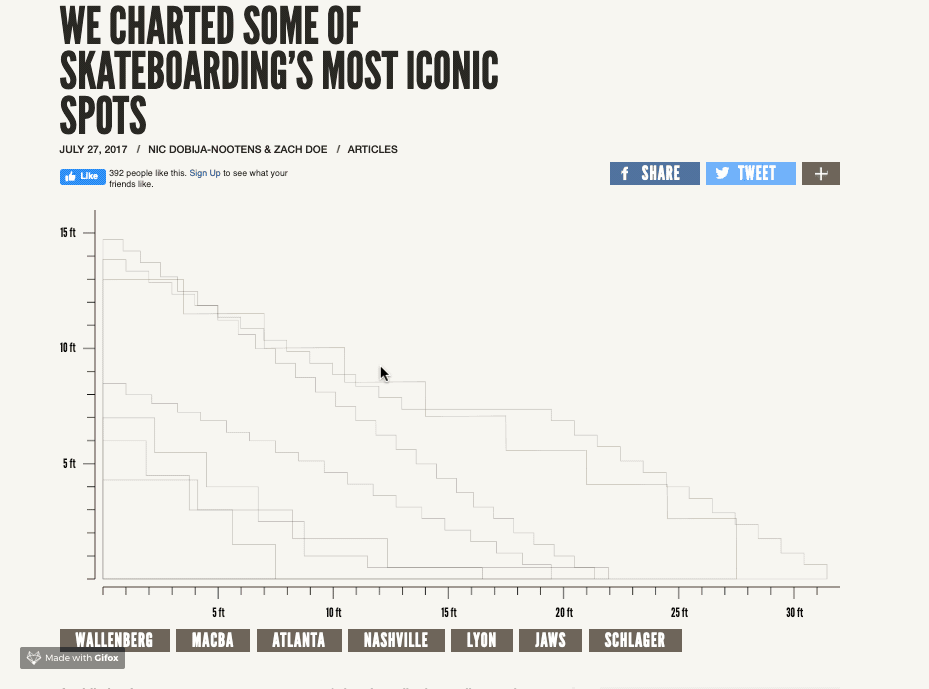
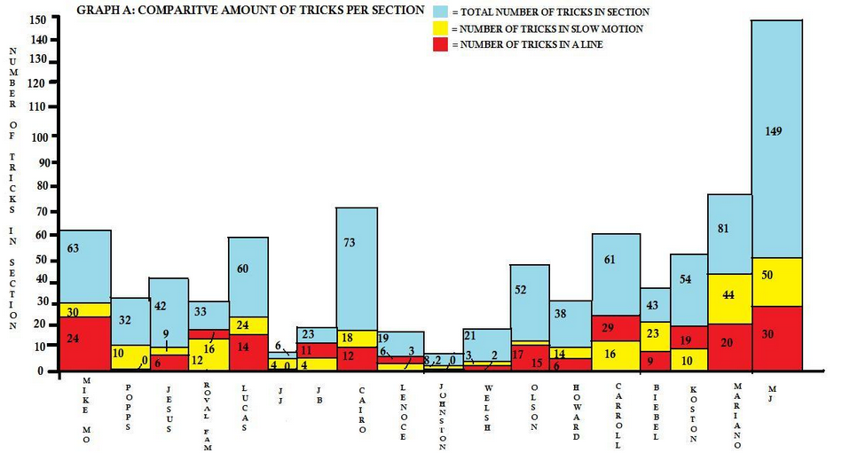

The space for skateboarding-related data visualizations is small. When you think about it, this shouldn't be surprising. In competetitive sports, empirical analysis can gain you an edge that may net you millions of dollars. In skateboarding, such approaches are basically worthless. Skateboarding is subjective (even in competitive events, winners are decided by a panel of judges), the data is less straightforward and more difficult to obtain, and the industry is worth basically nothing in comparison to larger sports enterprises (Nike, if you're reading this, don't let that dissuade you from advertising here).
Still, skateboarders are passionate people (no matter what you say, Elizabeth), and examples of skateboarding data visualization do exist. I've done my best to collect them here, for all skate-nerds (or dataviz fans) to enjoy:
A Visual Analysis of Battle at the Berrics
We'll start with what is likely the highest-quality piece of skateboarding data visualization: George Murphy's visualization of 2017's Battle At The Berrics 7. In an excellent scrolly-telling format, George breaks apart the tournament trick-by-trick, detailing in a beautiful manner both how the tournament works, as well as the performance of the competing skaters. It's super fun and informative, and a rare example of a data-driven approach being applied to 'competitive' skateboarding. (Is it time for skateboarding's Moneyball?)
WE CHARTED SOME OF SKATEBOARDING’S MOST ICONIC SPOTS
Simple but effective, Jenkem's "who's bigger?" spot repository overlaps iconic spots and allows for the size comparison skaters care about most. This is probably my favorite Jenkem piece of all time, as well as my favorite piece of skateboarding data visualization. It's a brilliant idea, well-executed, and a joy to both look at and use. Shout out to Nic Dobija-Nootens & Zach Doe for some awesome work. It's a breathing project, so feel free to contribute more spots.
The Good, the Rad, and the Gnarly: An exploration into the music of skateboarding

The Pudding is basically the best publication when it comes to interactive data visualization (besides maybe the New York Times). I definitely recommend taking the time to explore their entire collection of visual essays - there's tons of awesome stuff. This is a piece that I was fortunate enough to work on a few years back. In the article, I explore how music is used in skate videos, and how that usage differs across decades and companies. Big thanks to Matt Daniels and Jim Vallandingham for making it happen. (I need to see if I can get my hands back on that data now that skatevideosite.com is basically shut down...).
The Physics of Doing an Ollie on a Skateboard, or, the Science of Why I Can't Skate
For Wired, physics PhD Aatish Bhatia breaks down the phyiscs involved throughout the process of doing an Ollie. The visuals in the story are minimal, but sufficient for the story. The piece may feel a bit kooky (the author writes about "steering the skateboard while it's in the air"), but the idea is unique, and the article informative. It'd be cool to see the trajectory mappings for many tricks side-by-side.
The Physics of Doing an Ollie on a Skateboard, or, the Science of Why I Can't Skate
Erring more on the side of fine-art than data visualization, convivial studio takes Wired's physics idea one step further by placing motion tracking devices into trucks to log the positions of a skateboard during different tricks. The author (Paul Ferragut) clearly knows how to skate, and aside from some suspect sticker placement, the video is entertaining. Cool idea and execution - a worthy visit for all of the art fans out there.
THIS DUDE STATISTICALLY ANALYZED EVERY JIM GRECO CLIP

This article is actually the predecessor article to this entire site. I pitched this idea to Jenkem while I was recovering from open-heart surgery. I couldn't skate for months, was watching a bunch of skate videos in my boredom, and thought of the idea. Basically, I watched all of Greco's video parts, logged the data, found a narrative, and created some charts. We settled on Greco because he's had a fairly notorious career. The published version shedded the narrative in favor of a bare collection of charts, but it still came out cool, and the Jenkem dudes were great to work with.
Gideon Choi's By The Numbers Infographics
For nothing but the love of the game, SLAP Pal Gideon Choi created and released two skateboarding infographics: The Breakdown of Menikmati, and Appleyard vs Janoski. The infographics breakdown their respective topics into a series of easily digestible charts and summary statistics, highlighting various details and comparisons. They have a very clean look and, whether you're a skate nerd or not, are super fun to explore.
Fully Flared: A Statistical Analysis
Way back in 2008, in what is perhaps the first example of a a data-driven approach to skateboarding content, blogger Dan Watson spent some time breaking apart the slow-motion trick usage in Lakai's Fully Flared. To be honest, I'm not sure if the article's treatment of research is a caricature or not ('the author' is used in a self-referring manner at least 10 times), and the charts leave much to be desired, but the project deserves credit for being among the first to apply numbers to skateboarding. Thanks for leading the charge, Dan.
That's basically all the skateboarding-meets-dataviz that I've managed to find. (Did I miss something? Let me know! I'll add it to the list.) It's a small list, sure, but given the growing intersection between skateboarding and digital art, the higher numbers of skateboarders entering adulthood, and the rising popularity of computer science & data science, I'm optimistic that it'll grow going forward. For our part, we hope to contribute to the growing catalogue of skateboarding data visualization. Follow us for updates, and if you have any cool ideas you'd like to contribute or collab on, reach out and let us know!